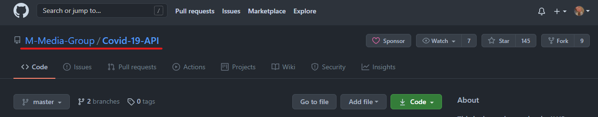
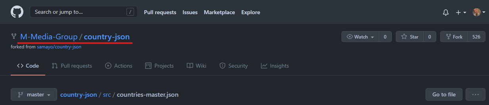
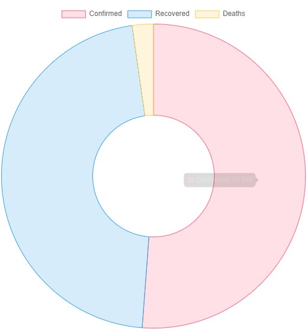

Covid-19 Statistics Tutorial
Why Visualise Covid-19?
Covid-19 is something that has distrupted the normality of life over the past year. As it has spread globally causing a pandemic where millions of people have died, there is a lot of data regarding virus. The data that I will be visalising is regarding to the confirmed cases, recovery cases and the deaths for each country.
On this page, there will be a tutorial on how to utilise the Covid-19 M-Media API's. These API's provide many different details about the virus. This tutorial will focus specifically on the amount of cases, recovery cases and deaths per country that the API provides statistics for. It will contain how to code the API and how to use it the way that I have decided to implement it.
The Data Sources Used
For visualising the data for Covid-19. There are two multiple data sources that will be used, they are both created by the M-Media Group. One of the API's will be used to access the data per country, and the other API will be used to retreieve the countries that the API has data for.
Link to the M-Media Group Covid Data API used
Link to the M-Media Group Country JSON API used
Making JavaScript Files Run
To make the files run when the HTML page runs, you need to include the scripts at the bottom of the page. The following code is how you should do this. This includes the scripts to the AJAX libraries and the scripts to both of the JS pages used to pull the data.
<script src="https://ajax.googleapis.com/ajax/libs/jquery/1.11.2/jquery.min.js">
<script type="text/javascript" src="../js/charley/countriesDS.js">
<script type="text/javascript" src="../js/charley/covidDS.js">
Getting Country Data
1. Making the JS document run automatically
JavaScript pages will not automatically run. So there is an AJAX function which ensures that the pages run when they are called.
$(document).ready(function () {
//In here will be the code that needs to run...
}
2. Calling getJSON() Method
After the document has been told to run when it is called. The next step is to declare the URL to the JSON that we are pulling the data from. After this, we will use the URL that we just declared as a variable using the .getJSON() method. Using a console.log will allow us to check that the data is being pulled correctly. This will allow us to store all of the results from the JSON into a variable called results using the following method.
var URL = "https://raw.githubusercontent.com/M-Media-Group/country-json/master/src/countries-master.json";
//Gets the JSON from the URL
$.getJSON(URL, function (results) {
console.log(results);
});
3. Splitting Data into Countries
Within the .getJSON() method, you need to loop through each results and pull out each country into its own temporary variable. Within the for loop, we will then call a method called displayCountries() which we will pass through the temporary variable with the country name within it. The console.log is only there for testing purposes. The displayCountries method will be explained in the following seciton of the tutorial.
$.getJSON(URL, function (results) {
console.log(results);
//Loops for each value in results
for(i=0; i < results.length; i++)
{
var countryTemp = results[i].country;
console.log(countryTemp);
displayCountries(countryTemp);
}
});
4. Displaying Countries into Dropdown Menu
This function that is called within the getJSON() method, uses DOM manipulation to display each country within a drop down menu that will allow the user of the website to choose which country they would like to see the Covid-19 data for. There is a list defined in the HTML page (see below), we will use the ID of this list to find it and add each option to it individually with the data that is passed through from the previous section.
<select id="countryList">
<option>Please select a country...
</select>
//Function displays each country as an option within a drop down list.
function displayCountries(country) {
document.getElementById("countryList").innerHTML +=
"<option>" + country + "";
}
Getting Covid-19 Data
1. Making the JS document run automatically
Just like in the Getting Countries Data section of the tutorial, JavaScript pages will not automatically run. So there is an AJAX function which ensures that the pages run when they are called.
$(document).ready(function () {
//In here will be the code that needs to run...
}
2. Getting Correct URL
As this URL searches by country, we will need to get the data that has been selected within the drop down menu, it is important that each time a new value is selected that the information being searched for changes. To do this, we need to implement the following code after the document has been readied.
//Each time a new country is selected, reset the data being pulled.
$("#countryList").change(function () {
clearData();
var country = $("#countryList option:selected").val();
console.log(country);
//Get searchURL for API.
var searchURL =
"https://covid-api.mmediagroup.fr/v1/cases?country=" + country;
//-- Clear Data Method --
function clearData() {
//Clearing chart
var doughnutContent = document.getElementById("doughnut-chart");
doughnutContent.innerHTML = " ";
//Clearing p data
var confirmedContent = document.getElementById("ConfirmedCases");
confirmedContent.innerHTML = "Confirmed Cases";
var recContent = document.getElementById("RecoveryCases");
recContent.innerHTML = "Recovery Cases";
var deathContent = document.getElementById("Deaths");
deathContent.innerHTML = "Deaths";
var updatedContent = document.getElementById("lastUpdated");
updatedContent.innerHTML = "Last Updated";
}
3. Calling getJSON() Method
The way to do this is the same as the way to do it whilst getting the country data. Please refer to the following code to find out how to pull the data from the search url. The results pulled from this will be the objects with the data within them for the country that is searched for.
//Search URL
var searchURL = "searchURLfromAbove";
//Gets the JSON from the URL
$.getJSON(searchURL, function (results) {
//Show the results that have been pulled
console.log(results);
});
4. Splitting Data into Variables
Within the .getJSON() method, the data will need to be split up into 4 variables. The confirmed cases, recovery cases, deaths and the time that this data was last updated. Storing this in a const variable means that you do not have to pass through each serperate variable when doing the next section of the code. The data const will be passed through into two different methods after it has been populated.
$.getJSON(URL, function (results) {
//Put data into its own const.
const data = {
confirmed: results.All.confirmed,
recovered: results.All.recovered,
deaths: results.All.deaths,
updated: results.All.updated
};
makeChart(data);
displayData(data);
});
5. Creating Doughnut Chart and Displaying Data
This method is called within the getJSON() method and the 'data' constant is passed through. This is populated using DOM manipulation. ChartJS is being used to create the chart, the ID is used to recognise where in the HTML it should be displayed/populated. In the function, I create a new chart and put its "ctx" as the element where it belongs on the HTML page. Then, the type of chart is defined as a doughnut chart. After that, it is the datasets that are being implemented into the different sections of the charts and giving them all seperate colours. After the datasets, labels are set so that the colours are easily recognised within the chart and the cutout percentage is set to 40%.
<script src="https://cdn.jsdelivr.net/npm/chart.js@2.9.4/dist/Chart.min.js">
<div class="col sm-6">
<canvas id="doughnut-chart" width="300" height="300">
</div>
function makeChart(stats) {
var ctx = document.getElementById("doughnut-chart").getContext("2d");
var myDoughnutChart = new Chart(ctx, {
type: "doughnut",
data: {
datasets: [
{
label: "Coronavirus Statistics",
data: [stats.confirmed, stats.recovered, stats.deaths],
backgroundColor: [
"rgba(255, 99, 132, 0.2)",
"rgba(54, 162, 235, 0.2)",
"rgba(255, 206, 86, 0.2)",
],
borderColor: [
"rgba(255, 99, 132, 1)",
"rgba(54, 162, 235, 1)",
"rgba(255, 206, 86, 1)",
],
borderWidth: 1,
},
],
// These labels appear in the legend and in the tooltips when hovering different arcs
labels: ["Confirmed", "Recovered", "Deaths"],
},
options: {
cutoutPercentage: 40,
},
});
}
6. Displaying Data within Labels
This is similar to displaying the Country Data in the previous section of the tutorial. This will be displayed using DOM manipulation and it will display the data that has been pulled from the JSON to the variables that have been defined with their own ID's in the HTML code, as shown below.
<p id='ConfirmedCases'>
<p id='RecoveryCases'>
<p id='Deaths'>
<p id='lastUpdated'>
function displayData(data) {
if (data.recovered != 0) {
document.getElementById("ConfirmedCases").innerHTML +=
"" + data.confirmed + "
";
document.getElementById("RecoveryCases").innerHTML +=
"" + data.recovered + "
";
document.getElementById("Deaths").innerHTML += "" + data.deaths + "
";
document.getElementById("lastUpdated").innerHTML +=
"" + data.updated + "
";
} else {
document.getElementById("ConfirmedCases").innerHTML +=
"" + data.confirmed + "
";
document.getElementById("RecoveryCases").innerHTML +=
"" + "Recovery Data Not Available" + "
";
document.getElementById("Deaths").innerHTML += "" + data.deaths + "
";
document.getElementById("lastUpdated").innerHTML +=
"" + data.updated + "
";
}
}
Using the Covid-19 Statistics Page
1. Open up the page by clicking on a link
Either Navigate to the page using the Nav-Bar or click on this link to access the Covid-19 Statistics Page. Select an option on the drop down menu that is showing on the page to see the data!
2. See the data that is displayed!
The page then should automatically update with the graph and fill in the fields on the right hand side of the page. It should look similar to the image below and this concludes the section on how to use the Covid-19 Statistics Page. 